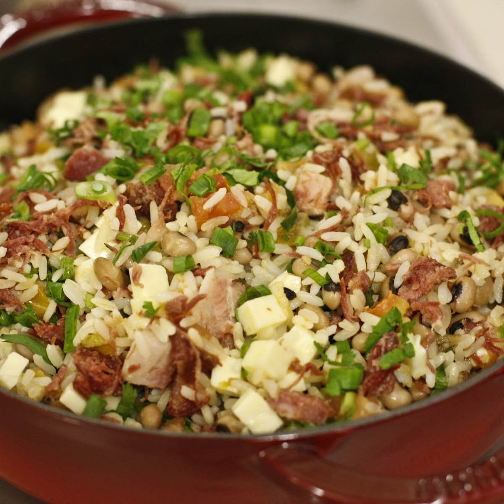

Página inicial >> Receitas >> Arroz e Risotos
ARROZ E RISOTOS

Baião de dois
Um verdadeiro cássico da culinária piauense e nordestina, o apreciado baião de dois vai bem com carne de sol, de porco, com ovo, com pequi e tudo mais que seu paladar inventar!
Risoto de carne seca e abóbora
Receita perfeita para um jantar num dia especial, o risoto de carne seca com abóbora é um prato fino que valoriza todo o sabor do Piauí!

Arroz de carneiro
No Piauí quando se fala em carneiro todo mundo chega! Imagina um arrozinho cozinhado dentro dele então? Huuuuummmm...